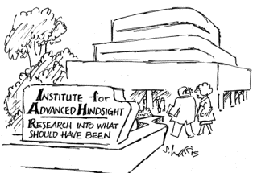

back to Cashdan's Courses
Anthro 5169: Ethnographic Methods
This course will introduce you to methods of ethnographic data
collection. Although ethnography involves both qualitative and
quantitative methods, and we will discuss both, the emphasis
will be on quantitative methods and scientific approaches.
We will begin with an introduction to research design, and will
then devote the first half of the term to learning techniques of behavior
observation and interviewing through class projects.
Because of the pandemic, observation techniques will be learned this
term by observing people at a safe distance in public spaces. There
will be two interviewing projects: (1) an oral history interview
exercise and (2) a class exercise in semi-structured and structured
interviewing and questionnaire design.
During the second half of the term, students will work on a fieldwork
project of their own choice. Assignments will be minimal during the
last few weeks of the term, to allow time for students to work on the
individual research projects. Class time during this period will be
devoted to discussion about student projects, practical fieldwork
issues, and lectures on other fieldwork techniques, the choice
depending on student interests.
Announcements (Oct 20)
Bernard has posted a
sample NSF proposal that you might find helpful.
The proposal proper begins below the first summary section (required
by NSF) and starts with the subhead "Statement of the Problem."
Read the first paragraph under that subhead (beginning with the words
"Reports on the state of...") and you will see that it does all the
things I suggested for the opening of a proposal:
- introduces the general topic
- explains what is known
- identifies the gap in our knowledge
- states how this proposal will fill that gap and
- makes it clear why anyone should care (this can be anywhere in
the paragraph)
The rest of the introduction expands on this. The Literature Review
section shows how the proposal fits into and builds on existing
literature.
Different grantiing agencies will have different specific guidelines,
which you should follow to the letter, but the general form is similar
across proposals.
Proposals are written by people in government, non-governmental
agencies, and businesses, not just academia, so learning how to write
them is a useful skill. And of course students will need to write a
proposal if they want UROP funding for their undergraduate research.
Written Assignments
This list includes written assignments only; see syllabus for readings and other requirements.
- Art and Science of fieldwork: Read an ethnographic article by one of the departmental faculty
and submit a brief (max 500 words) summary of the research question posed in the article and the methods the ethnographer used to answer it. See additional guidelines on syllabus. Due Sept. 1, before class.
- Research design:
Science isn't broken. Read and play around with the "hack your way to scientific glory"
exercise, then write and submit a short summary of the take-home messages, including both (a) your result from
the exercise and (b) Brian Nosek’s study on soccer referees. Due Sept 8, before class.
- Observation study 1: Informal observation of COVID-precautionary measures outside public establishments. Write down some hypotheses to test and behaviors to measure, and bring them to class.
- Observation study 2: Systematic behavior observation guidelines here. Due Oct. 6
- Oral history exercise: Oral history guidelines here Due Oct 13.
- Question construction exercise: Interview questions guidelines here. Due Oct 16, 19, and 27
- Proposal, part 1: Project aims and background. Due Oct. 27.
- Proposal, part 2: Project methods.. Due Nov. 3.
- Final Project Report : Final project report guidelines Due Dec 13.
Resources
